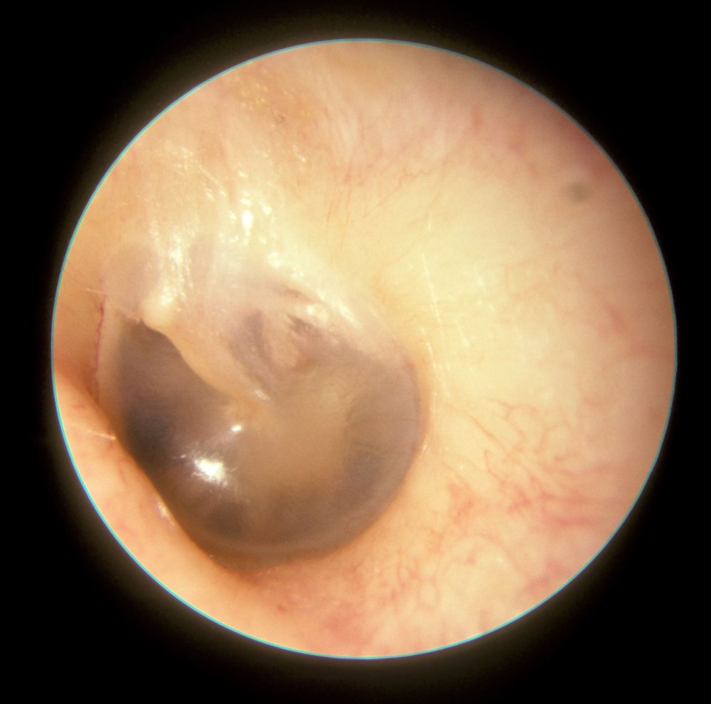

Методы исследования уха и слуха
Анамнез и осмотр
Клиническое исследование слуха, как и любое другое, включает сбор анамнеза, осмотр и функциональные пробы. Цель простых клинических проб состоит в том, чтобы оценить сохранность слуха и его симметричность, а затем выбрать более точные методы. У каждого пациента выясняют три главных симптома поражения внутреннего уха: снижение слуха, шум в ухе и головокружение. При жалобах со стороны уха уточняют наличие боли и выделений, а также ранее перенесённые операции на ухе, перфорацию барабанной перепонки и травмы.
Исследование начинают с осмотра ушной раковины и окружающих областей. Обращают внимание на изменения формы раковины и наружного слухового прохода, послеоперационные рубцы, корки в проходе, а также на характер отделяемого: сера, слизь, гной, кровь, ликвор.
Отоскопия
Перед отоскопией проверяют болезненность при надавливании на козелок и при оттягивании ушной раковины. Эти признаки указывают на наружный отит и обязывают к особенно осторожной технике осмотра. Ушную раковину мягко отводят кзади и кверху, без чрезмерного натяжения: так выпрямляется наружный слуховой проход, и хрящевая часть выстраивается по оси костной. Воронку выбирают наиболее широкую из возможных, поскольку она обеспечивает лучший обзор и освещение, и вводят её медленно, под контролем зрения, не доходя до костной, болезненной части прохода.
Передненижний угол барабанной перепонки нередко не виден из-за выступающего височно-нижнечелюстного сустава. Нормальная барабанная перепонка серого цвета, прозрачность её различна, и у тонкой перепонки сквозь неё можно увидеть длинный отросток наковальни или барабанную струну. Книга описывает три свойства нормальной перепонки. Она отражает свет: световой конус обычно лежит в переднем нижнем квадранте, а при воспалительном отёке эпителия световые рефлексы исчезают. Она структурирована: различимы фиброзно-хрящевое кольцо и рукоятка молоточка, при остром воспалении опознавательные знаки перестают определяться. Наконец, она подвижна, и подвижность лучше всего оценивается в заднем верхнем квадранте.

Подвижность барабанной перепонки
Подвижность ограничивается при наличии выпота в среднем ухе, а также при рубцах и дефектах перепонки. Её оценивают при отоскопии двумя способами. Пассивная проба выполняется пневматической воронкой Зигле: наружный слуховой проход герметично закрывают воронкой и создают в нём положительное давление, под действием которого перепонка смещается. Активные пробы основаны на нагнетании воздуха через слуховую трубу в барабанную полость, при этом перепонка выбухает кнаружи. Простейшим примером служит проба Вальсальвы: пациент делает глотательное движение, зажимает нос и «натуживается». Активные пробы одновременно показывают проходимость слуховой трубы.
Отдельно авторы подчёркивают, что отоскопия с оценкой барабанной перепонки является основным методом исследования при заболеваниях среднего уха, а отоларинголог-отиатр для диагностики использует бинокулярный операционный микроскоп.
Исследование слуха речью
Громкость и разборчивость речи позволяют грубо оценить степень тугоухости без приборов. Пациент слушает и повторяет двузначные числа, а врач сравнивает слух справа и слева. Противоположное ухо необходимо заглушить: в наружный слуховой проход вводят влажный комочек ваты, которым покачивают пальцем, и создаваемый шум исключает перекрёстное восприятие. Врач шепчет числа, отвернув голову от пациента. Если числа не поняты, расстояние сокращают, а при необходимости переходят к разговорной речи. Условия исследования, прежде всего громкость, должны оставаться постоянными.
В норме двузначные числа, произнесённые шёпотом, пациент понимает примерно с 6 метров, а при отвёрнутой голове говорящего примерно с 4 метров. Если числа различаются только шёпотом у самого входа в слуховой проход, речь идёт о выраженной тугоухости как минимум на высоких частотах речевого диапазона. Если они не различаются и при громкой речи у уха, слух на этой стороне для речи отсутствует. Авторы предупреждают, что метод неточен и зависит от многих неконтролируемых факторов, поэтому количественно степень тугоухости определяют только аудиометрически.
Камертональные пробы
Камертональные пробы нужны для того, чтобы отличить кондуктивную тугоухость, вызванную поражением наружного слухового прохода или среднего уха, от сенсоневральной, при которой страдают улитка или нервные структуры слухового пути. Саму потерю слуха эти пробы напрямую не выявляют. Используют камертон с частотой от 250 до 800 Гц и широким основанием; при костной проводимости его основание плотно прижимают к кости, чтобы вибрация преодолела демпфирование кожей.
При опыте Вебера1 камертон устанавливают по средней линии на темя или лоб. В норме звук воспринимается одинаково в обоих ушах, то есть посередине головы. При односторонней сенсоневральной тугоухости звук латерализуется в лучше слышащее ухо. При кондуктивной тугоухости он латерализуется в больное ухо: вибрация хуже отводится через среднее ухо, и окружающие звуки меньше маскируют костное звучание, так что функционирующая улитка получает больше энергии.
Опыт Ринне сравнивает воздушную и костную проводимость в одном и том же ухе. Камертон держат у наружного слухового прохода, не касаясь его, а затем плотно прижимают к сосцевидному отростку. В норме воздушная проводимость громче и дольше костной (положительный опыт Ринне), при кондуктивной тугоухости на сосцевидном отростке звук слышен громче (отрицательный опыт). При выраженной разнице слуха между ушами противоположное ухо необходимо заглушить, иначе возможен ложноотрицательный результат; на практике в таких случаях порог оценивают аудиометрически.
Тональная пороговая аудиометрия
Тональная пороговая аудиометрия определяет порог слышимости чистых тонов, как правило, на частотах от 125 Гц до 8 кГц с шагом в октаву или полуоктаву, отдельно для каждого уха и отдельно для воздушной и костной проводимости. Воздушную проводимость исследуют через наушники или вставные телефоны, костную через вибратор, прижатый к сосцевидному отростку или лбу. Противоположное ухо маскируют шумом.
При нормальном звукопроведении пороги воздушной и костной проводимости совпадают. Если порог по воздуху выше порога по кости, имеется кондуктивная тугоухость, и разница между ними составляет костно-воздушный интервал. При сенсоневральной тугоухости значимой разницы нет, а пороги повышены, нередко сильнее на высоких частотах. О смешанной тугоухости свидетельствует повышение порога по кости на фоне большего снижения по воздуху. Характерные формы аудиограммы указывают на причину: провал на 4–6 кГц типичен для шумовой тугоухости, подъём кривой на низких частотах — для начала болезни Меньера, провал костной кривой на средних частотах (зубец Кархарта) — для отосклероза.
Надпороговые тесты нужны, чтобы выявить феномен ускоренного нарастания громкости (рекруитмент) и патологическую адаптацию. К ним относятся тесты Фаулера, Люшера и индекс малых приращений интенсивности. Авторы отмечают, что сегодня им на смену пришли более простые и надёжные объективные методы, и классические надпороговые пробы применяются редко. При рекруитменте динамический диапазон слуха сужается, поэтому перед подбором слухового аппарата определяют порог дискомфорта.
Надпороговая аудиометрия
Надпороговая аудиометрия включает в себя аудиометрические пробы, в которых тестирующие звуки и речевые сигналы заведомо превышают порог чувствительности слуха. С помощью этих проб достигаются следующие цели: выявление ФУНГ (феномена ускоренного нарастания громкости) и адаптационных резервов органа слуха, определение уровня слухового дискомфорта, разборчивости речи, помехоустойчивости и ряд других функций звукового анализатора.
Надпороговая тональная аудиометрия предусматривает использование в качестве тестирующего звука чистого тона, преимущественно на стандартной частоте 1000 Гц. Тест основан на феномене ФУНГ, патофизиологическую трактовку которого дал Б. М. Сагалович (1978): ФУНГ — это результат парабиотического состояния волосковых клеток и их синапсов, приводящего к нарушению эфферентной регуляции их метаболизма, а также к несогласованности генераторной деятельности наружных и внутренних волосковых клеток спирального органа. Согласно этой концепции, ФУНГ может быть применим в дифференциальной диагностике между кохлеарной и ретрокохлеарной формами тугоухости; при этом нормальному слуху присущ нормальный показатель дифференциального порога интенсивности, поражению волосковых клеток — его понижение, а поражению ретрокохлеарных структур — повышение. Наиболее широкое распространение в конце ХХ в. получили проба Люшера — Цвиклоцкого, SISI-тест, тест уровня слухового дискомфорта и ряд других.
Проба Люшера — Цвиклоцкого представлена в виде стандартного теста в любом современном тональном аудиометре. В исследуемое ухо подаётся звук (1000 Гц, 20 и 40 дБ над порогом) с частотой модуляции 2 Гц и меняющейся интенсивностью (от 0,2 до 6 дБ). Задача обследуемого состоит в том, чтобы при повышении интенсивности звука отметить появление флюктуации громкости; отмеченная величина и составит дифференциальный порог интенсивности в децибелах. Нормативы: при фоновой интенсивности тестирующего звука над порогом в 20 дБ нормальная величина дифференциального порога интенсивности находится в пределах 1,1–1,7 дБ; при 40 дБ — 0,7–1,5 дБ. При нарушении звукопроведения и ретрокохлеарных структур она не меняется или слегка повышается. При улитковых поражениях — снижается до 0,5 дБ; при поражениях центральных отделов звукового анализатора достигает 3 дБ и более.
Исследования последнего десятилетия ХХ в. показали, что результаты пробы Люшера не всегда коррелируют с данными тональной аудиометрии и другими надпороговыми тестами. Поэтому наличию ФУНГ в пробе Люшера не следует придавать значение патогномоничного признака поражения волоскового аппарата спирального органа; целесообразно рассматривать его в качестве вероятного критерия в дифференциальной диагностике между нарушением звукопроведения и звуковосприятия только при сопоставлении с данными пороговой тональной аудиометрии.
SISI-тест: на фоне надпороговой интенсивности звука 1000 Гц этот звук внезапно усиливается на 1 дБ один раз в 5 с при длительности усиленного звука 200 мс. Если испытуемый слышит это повышение громкости, он отмечает это нажатием кнопки; далее вычисляют процент положительных ответов относительно общего числа предъявленных приращений звука. Чем более выражен дифференциальный порог интенсивности, тем больше процент правильных ответов. Нормативы: при нормальном слухе максимальная доля различения прироста интенсивности звука составляет, по данным разных авторов, от 20 до 30% и более. Автор метода считает, что наличие ФУНГ должно устанавливаться с уровня 60%.
Уровень слухового дискомфорта отображает на сетке тональной аудиограммы предел интенсивности звука, при котором пациенту становится неприятно звуковое воздействие, то есть возникает желание «убавить звук»; для нормального слуха он соответствует приблизительно 95–100 дБ на средних частотах. В патофизиологическом отношении уровень слухового дискомфорта является выражением рекрутмента, то есть ФУНГ: чем более выражен этот феномен, тем при меньшей интенсивности звука возникает слуховой дискомфорт и тем уже слуховое поле. На каждой из частот (250, 1000, 2000, 4000, 8000 Гц) определяют уровень пороговой чувствительности и, продолжая увеличение интенсивности звука ступенями по 5 дБ, устанавливают уровень слухового дискомфорта; между двумя кривыми образуется слуховое поле.
При сенсоневральной тугоухости кохлеарного генеза с присутствием ФУНГ уровень слухового дискомфорта повышается, а слуховое поле сужается. При ретрокохлеарной тугоухости уровень слухового дискомфорта сохраняется в пределах нормы, но слуховое поле сужается за счёт потери слуха на высоких частотах. При кондуктивной тугоухости уровень слухового дискомфорта располагается на уровне 100 дБ или вовсе не определяется, граница перехода от комфорта к дискомфорту определяется с трудом, а сам переход происходит плавно. При сенсоневральной тугоухости, особенно при наличии ФУНГ, этот переход происходит внезапно, резко.
Проба выравнивания громкости (тест Фаулера, E. P. Fowler) основана на выравнивании громкости при повышении интенсивности звука на хуже слышащее ухо в том случае, если в нём присутствует ФУНГ; выполняется при значительной разнице между уровнями пороговых кривых обоих ушей. Определяют пороговые уровни для каждого уха; затем в лучше слышащее ухо подают тон (500, 1000 или 2000 Гц) интенсивностью 10 дБ над порогом, а в хуже слышащее — тон той же частоты, интенсивность которого постепенно повышается, пока испытуемый не отметит равную громкость. Далее интенсивность звука на лучше слышащее ухо увеличивают ступенями по 10 дБ с определением «выравнивающей» интенсивности на хуже слышащем ухе. Наличие в хуже слышащем ухе ФУНГ обусловливает при каждом новом приращении интенсивности звука всё меньшую её прибавку; выравнивание громкости может проявляться как при одном, так и при нескольких тонах. Исследование начинают с высоких звуков. по: Бабияк и соавт., т. 2, с. 395–402
Речевая аудиометрия
Речевая аудиометрия оценивает не обнаружение речевого сигнала, а его понимание. Пациент повторяет слоги, слова или фразы, предъявляемые на разных уровнях громкости, и по доле правильных ответов строится кривая разборчивости. На результат влияют не только слух, но и память, понимание языка и словарный запас. В обычной клинической практике применяют открытые тесты, то есть списки фонетически сбалансированных слов, а закрытые тесты с выбором из нескольких слов используют реже.
Порог разборчивости речи соответствует уровню, при котором понимается 50 % материала; именно в этой точке кривая круче всего. При кондуктивной тугоухости кривая сдвигается параллельно в сторону больших уровней, но при достаточной громкости разборчивость достигает 100 %. При сенсоневральной тугоухости кривая уплощается, а снижение разборчивости при высокой громкости указывает на поражение улитки или нервных структур.
Методы исследования слуховой трубы
М. Ю. Бобошко и А. И. Лопотко (2002) подразделяют все методы исследования слуховой трубы на три категории:
- общие методы, применение которых возможно как при целой, так и при перфорированной барабанной перепонке: оптические методы (эпифарингоскопия, отоскопия, сальпингоскопия), аускультация и продувание слуховых труб, объективная регистрация тубарных биоакустических эмиссий, бужирование, рентгенологические методы, сцинтиграфия, ушная манометрия, тубосонометрия;
- методы, применяемые при целой барабанной перепонке: барокамерный метод, методы определения внутрибарабанного давления, пневмофонометрия (фонобарометрия), тимпанометрия (импедансобарометрия), акустическая рефлексометрия;
- методы, применяемые при перфорированной барабанной перепонке: метод выравнивания давления, резистометрия, транстимпанальное введение маркеров на жидкостной основе.
по: Бабияк и соавт., т. 2, с. 416–417
Нарушение барофункции слуховой трубы проявляется следующими отоскопическими признаками: втянутость расслабленной части барабанной перепонки, которая выглядит в виде впадины, на дне которой образуются мелкие складки; увеличение глубины конуса барабанной перепонки, из-за чего короткий отросток молоточка выпячивается кнаружи (симптом «указательного пальца»), световой рефлекс резко укорочен или вовсе отсутствует. Если при такой длительно наблюдающейся отоскопической картине в барабанной полости не возникает транссудат, то речь, скорее всего, идет не о нарушении вентиляционной функции слуховой трубы, а о резком спазме мышцы, натягивающей барабанную перепонку, или слипчивом процессе, в результате которого барабанная перепонка «приросла» к медиальной стенке барабанной полости.
Эпифарингоскопию (заднюю риноскопию) наряду с классическим методом, предложенным физиологом Я. Чермаком в 1858 г., проводят специальным жестким эпифарингоскопом с изменяющимся углом обзора и системой волоконного освещения. С помощью эпифарингоскопа оценивают состояние носоглоточных устьев слуховых труб (гиперемия, синехии, повреждения), состояние трубных миндалин, аденоидной ткани, хоан, сошника. Пневмоотоскопия проводится с помощью воронки Зигле (Siegle, 1864), снабженной резиновым баллончиком: при герметично закрытом воронкой слуховом проходе в нем повышают и понижают давление воздуха, что в норме приводит к колебаниям барабанной перепонки. При нарушении вентиляционной функции слуховой трубы или при адгезивном процессе подвижность перепонки отсутствует.
Сальпингоскопия — осмотр слуховой трубы — наиболее эффективный способ оценки ее состояния. Барабанное отверстие слуховой трубы можно осмотреть при наличии или полном отсутствии барабанной перепонки. При целой барабанной перепонке для осмотра тимпанального отверстия слуховой трубы применяют миринготомию (транстимпанальная микроэндоскопия слуховой трубы): гибкий микроэндоскоп под контролем зрения вводят в барабанное отверстие и продвигают по всей длине слуховой трубы вплоть до ее носоглоточного отверстия.
Продувание слуховой трубы предложено А. Политцером в 1863 г. Применяют баллон, соединенный посредством резиновой трубки с носовой оливой, которую вставляют в ноздрю и плотно зажимают вместе с другой ноздрей. Обследуемый делает глоток воды, во время которого полость носа и носоглотка перекрываются мягким небом, а глоточное отверстие слуховой трубы раскрывается. В этот момент баллон сдавливают, в полости носа и носоглотке повышается давление воздуха, который при нормальном функционировании слуховой трубы поступает в среднее ухо. При поступлении воздуха в барабанную полость в наружном слуховом проходе можно прослушать определенный звук. по: Бабияк и соавт., т. 2, с. 417–419
Пробы на проходимость слуховой трубы:
- опыт Вальсальвы2 — попытка выдоха при зажатом носе и губах; при проходимости слуховой трубы возникает ощущение хлопка или распирания в области барабанной перепонки, а обследующий выслушивает отоскопом характерный дующий или хлопающий звук;
- опыт Тойнби — «пустой» глоток при зажатом носе, во время которого выслушивают отоскопом шум или крепитацию воздуха;
- опыт Политцера (1863) — повышение давления в носоглотке баллоном во время глотка воды; обследуемый ощущает толчок в барабанные перепонки, обследующий с отоскопом Люце (резиновая трубка с двумя оливами, вставляемыми в наружные слуховые проходы обследуемого и обследующего) слышит характерный дующий звук;
- опыт Люце — Грубера: в опыте Политцера глоток воды заменяют многократным произнесением слова «Hacke»; в русской модификации произносят «пароход» или многократное «также», во время которых мягкое небо перекрывает носоглотку;
- опыт Леви — при плотном сжатии губ обследуемый надувает щеки, в это время обследующий сжимает баллон и выслушивает с помощью отоскопа характерный шум.
по: Бабияк и соавт., т. 2, с. 419–420
А. А. Пухальский (1939) предложил классифицировать состояние вентиляционной функции слуховых труб по четырем степеням:
- I — шум выслушивается при простом глотке;
- II — шум выслушивается при пробе Тойнби;
- III — шум выслушивается при пробе Вальсальвы;
- IV — шум не выслушивается ни при одной из проб. Полную непроходимость оценивают по отсутствию шума при выполнении пробы Политцера с глотком воды.
по: Бабияк и соавт., т. 2, с. 420
Непроходимость слуховой трубы может быть обусловлена отеком ее слизистой оболочки (острый или хронический сальпингоотит), воспалительными процессами носоглотки и среднего уха, баротравмой. При невозможности определения проходимости слуховой трубы приведенными способами прибегают к ее катетеризации. Наибольшее распространение получил способ, описанный в разное время Франком (1845) и Левенбергом (1867). Катетер вводят по общему носовому ходу клювом вниз до задней стенки носоглотки, поворачивают его на 90° в сторону противоположного уха и подтягивают до соприкосновения с сошником. Затем поворачивают катетер клювом книзу на 180° в сторону исследуемой слуховой трубы так, чтобы клюв был обращен к боковой стенке носоглотки. После этого клюв поворачивают кверху еще на 30–40°, чтобы колечко у воронки катетера оказалось направленным в сторону наружного угла глазницы. Попадание в отверстие характеризуется ощущением «захвата» конца катетера. Далее легкими, но акцентированными движениями баллоном нагнетают в катетер воздух. При проходимости слуховой трубы прослушивается дующий шум, а при отоскопии обнаруживается инъекция сосудов барабанной перепонки.
К осложнениям катетеризации М. Ю. Бобошко и А. И. Лопотко относят редко возникающие носовые кровотечения, головокружение (при чрезмерно сильном давлении на баллон), обмороки, судороги, разрывы барабанной перепонки, подслизистую и подкожную эмфизему.
Основоположником метода ушной манометрии является А. Политцер (1892), который установил, что при повышении давления в носоглотке и наличии проходимости слуховой трубы повышается давление в барабанной полости, которое выпячивает барабанную перепонку и уменьшает объем наружного слухового прохода. Из всех предложенных ушных манометров наиболее оригинальным был манометр В. И. Воячека (1908), с помощью которого определяли четыре степени проходимости слуховой трубы в последовательно проводимых опытах с простым глотком, Тойнби и Вальсальвы по смещению подкрашенной капли спирта в капилляре, сообщающемся с герметически закрытой полостью наружного слухового прохода. В настоящее время исследование функции слуховой трубы проводится при помощи фонобарометрии и электротубометрии. по: Бабияк и соавт., т. 2, с. 420–421
Импедансометрия
Импедансометрия включает тимпанометрию и акустическую рефлексометрию. В наружный слуховой проход герметично вводят зонд, подающий тон 220 Гц, и измеряют акустический импеданс системы. Давление в проходе меняют, как правило, в пределах ±300 даПа (мм вод. ст.). При равенстве давлений в проходе и барабанной полости перепонка наиболее податлива, а по мере изменения давления жёсткость системы растёт. График податливости в зависимости от давления представляет собой тимпанограмму.
Нормальная тимпанограмма (тип А) имеет острый пик в области от +100 до –100 даПа. Тип В характеризуется плоской кривой или очень низким пологим пиком и указывает на неподвижность перепонки, например при выпоте в барабанной полости или ателектазе. Тип С имеет пик в зоне отрицательного давления ниже –100 даПа и свидетельствует о нарушении вентиляции среднего уха. Один лишь результат тимпанометрии малоинформативен и оценивается только вместе с отоскопией.
Акустический рефлекс возникает при сокращении стременной мышцы в ответ на звук. В норме он вызывается тоном около 80–90 дБ над порогом слуха (дБ HL), широкополосным сигналом на 10–20 дБ ниже. Рефлекс регистрируют на стороне стимуляции (ипсилатерально) и на противоположной стороне (контралатерально), а исследуют его всегда после тимпанометрии и только при типе А или С. Отсутствие рефлекса или повышение его порога возможно при поражении цепи косточек, улитки и слухового нерва, ствола мозга, лицевого нерва и самой стременной мышцы. Разница между порогом слуха и порогом рефлекса в норме составляет 60 дБ и более; при рекруитменте рефлекс возникает всего на 10 дБ выше порога слуха.
Объективные методы: отоакустическая эмиссия и слуховые вызванные потенциалы
Отоакустическая эмиссия (ОАЭ) представляет собой звуки, которые улитка излучает в наружный слуховой проход благодаря работе наружных волосковых клеток; их регистрирует чувствительный микрофон. Для регистрации необходима нормальная функция среднего уха. В клинике используют задержанную вызванную ОАЭ на щелчок и эмиссию на частоте продукта искажения. При нормальной функции улитки и среднего уха задержанная вызванная ОАЭ регистрируется практически всегда, а при кохлеарной тугоухости с повышением порога около 30 дБ или при заболевании среднего уха она отсутствует. Главное применение метода состоит в скрининге слуха у новорождённых и детей раннего возраста, поскольку он проводится быстро, без седации. Однако ни локализацию, ни степень потери слуха по ОАЭ определить нельзя, и при отсутствии эмиссии требуются вызванные потенциалы и поведенческая аудиометрия.
Слуховые вызванные потенциалы регистрируют поверхностными электродами и выделяют из фоновой электроэнцефалограммы многократным усреднением в ответ на повторяющиеся стимулы. По латентности различают электрокохлеографию (1–3 мс), потенциалы ствола мозга (до 10 мс), среднелатентные (10–100 мс) и корковые (100–1000 мс). Чаще всего применяют коротколатентные слуховые вызванные потенциалы (КСВП), или слуховой ответ ствола мозга: он вызывается щелчком, для записи требуется 1000–2000 повторений, форма сохраняется во сне и под наркозом, что важно для детей. Кривая состоит из пяти–шести волн (I–VI по Джуэтту). Метод помогает отличить кохлеарную тугоухость от ретрокохлеарной и объективно определить порог слуха, преимущественно на средних и высоких частотах; порог волны V обычно лежит около 10 дБ над порогом слуха. Удлинение межпикового интервала I–V свыше примерно 4,3 мс указывает на ретрокохлеарное поражение и служит поводом для дальнейшей визуализации. Лучевые методы в рассмотренных главах отдельно не описаны, упоминается лишь их роль в уточнении уровня поражения.
Примечания
1Weber Ernst H. (1795–1878) — немецкий анатом и физиолог, автор акуметрического опыта, при помощи которого дифференцируют нарушение функции звукопроведения от функции звуковосприятия (тест латерализации звука при тканевом проведении). (по: Бабияк и соавт., т. 2, с. 714)
2Valsalva Antonio Maria (1666–1723) — выдающийся итальянский анатом и хирург. (по: Бабияк и соавт., т. 2, с. 427)
Источники
- Probst R., Grevers G., Iro H. Basic Otorhinolaryngology: A Step-by-Step Learning Guide. — Stuttgart: Thieme. — P. 166–191, 231.
- Бабияк В. И., Накатис Я. А., Говорун М. И. Оториноларингология. Руководство. Т. 2. — СПб.: Питер, 2009. — Гл. 25 «Методы исследования органа слуха», разделы «Надпороговая аудиометрия»: с. 395–402; «Методы исследования слуховой трубы»: с. 416–421.
- Бабияк В. И., Накатис Я. А., Говорун М. И. Оториноларингология. Руководство. Т. 2. — СПб.: Питер, 2009. — Примечания к главам (сведения об учёных): с. 714.
Раздел «Учебник» — справочная теория, не клинические рекомендации. Тактика ведения пациента — по разборам КР.